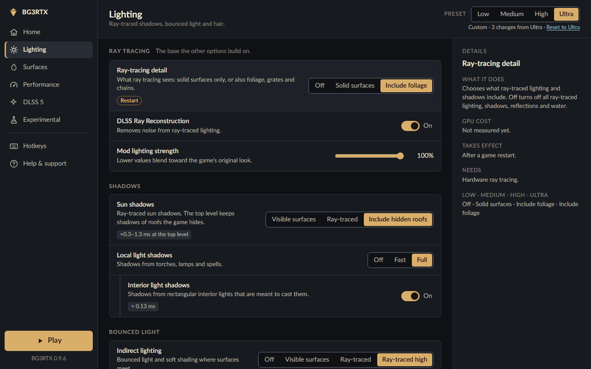
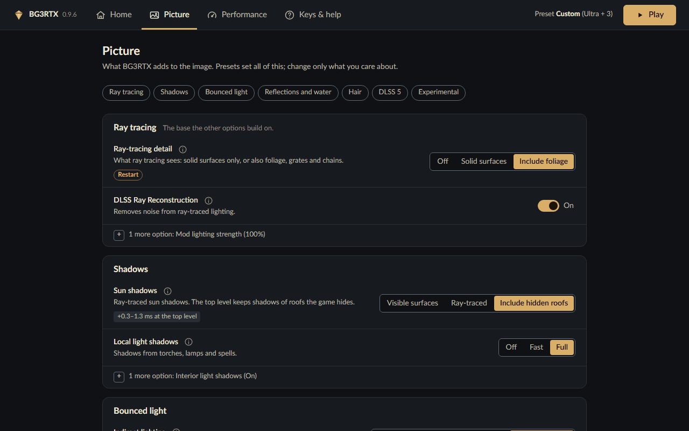

BG3RTX launcher rework: mockups
Two directions for the same content: every control of 0.9.6 with its real name, choices and costs. Both use the same rules for saving, restart, dependencies and experimental options (see PROPOSAL.md; the problems they answer are in AUDIT.md). The black bar at the top of each mockup is not part of the design: it switches between the designed states. Controls can be clicked; turn RTX Hair off to see a dependency change.
Direction A: sidebar, rows, detail panel

- Eight pages in a sidebar, close to today's; Play and the version always at the bottom left.
- One compact row per setting, grouped; children indented under their parent.
- Click a row: what it does, cost, when it takes effect, what it needs and the preset values appear on the right.
- Experimental options live on one page, with their switch.
Direction B: four tabs, grouped cards

- Four tabs: Home, Picture, Performance, Keys & help. Play always at the top right.
- One card per topic with the main controls; the rest behind "more options".
- Details open under the row with the (i) button; preset tiles with descriptions on Home.
- Experimental options stay on their page, in a marked section with the switch.
Differences
| Direction A | Direction B | |
|---|---|---|
| Finding a control | Everything on a page is visible; one to two screens per page | Fewer places to look, but 6 of the 27 controls are one click deeper and Picture is a long page |
| Learning what a control does | Detail panel, always in the same place | Inline under the row; pushes the page down |
| First run | Preset buttons; description on Home | Preset tiles with descriptions: clearer for a new player |
| Experimental | One page: easy to see everything that is not qualified | In context, per page: easy to relate to its feature, but split in two places |
| Distance from today's code | Small: same pages and categories; cards become rows | Larger: pages no longer match the settings categories |
| Small window (1000 x 700) | Detail moves under the row | Unchanged single column |
Recommendation
Direction A, optionally with B's preset tiles on Home. BG3RTX players tune settings and compare costs:
A keeps every control visible, puts cost and restart information in fixed places and scales as controls are
added. It also keeps the page of each control equal to its category in settings.h, so the first
three implementation phases need no bridge change. B is friendlier at first sight but hides six
controls behind disclosures, which is the kind of surprise the audit is trying to remove.
Designed states (deep links)
| State | A | B |
|---|---|---|
| Home, saved | open | open |
| Long preparation running | open | open |
| Error: game folder missing | open | open |
| Lighting with the RTX Hair group | open | open |
| Dependency change (RTX Hair off) | open | open |
| Surfaces | open | open |
| Performance, unsaved changes | open | open |
| Review dialog | open | open |
| Restart needed | open | open |
| DLSS 5 | open | open |
| Experimental, switch on / off | on · off | on · off |
| Hotkeys, Help & support | keys · help | open |
| Light theme | open | open |
Screenshots of these states are in shots/. The two files are generated by
build_mockups.py from one table of controls, so a copy change is made once. Sample values: Ultra with RTX Hair
on, an RTX 5090, version 0.9.6. Not designed here: developer mode pages, the report dialog (kept as it is) and the basic
fallback window.